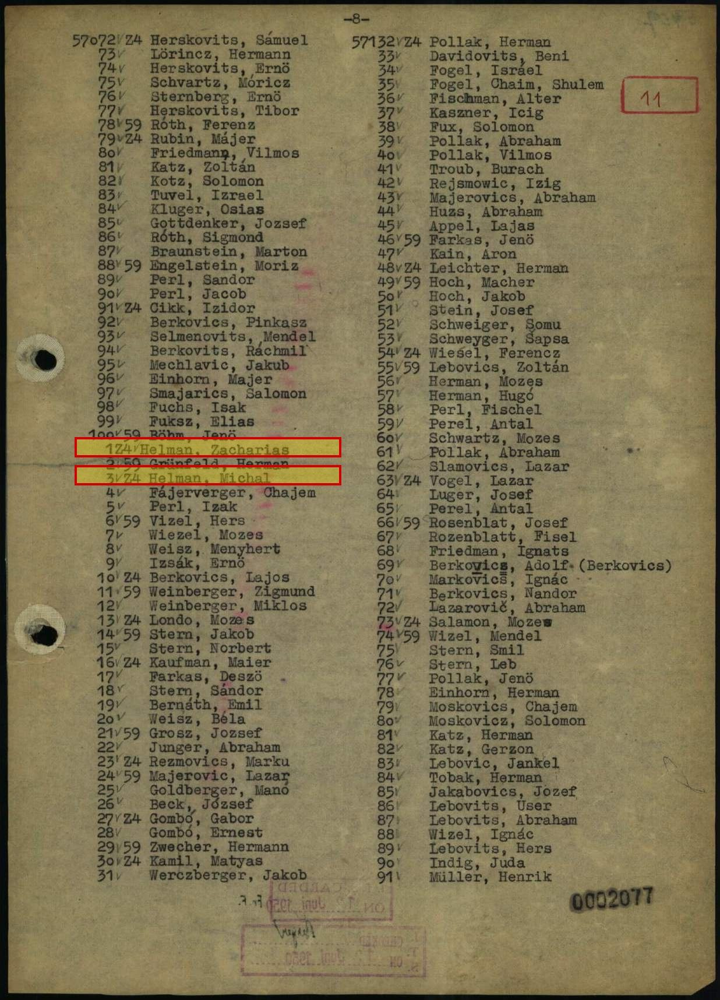
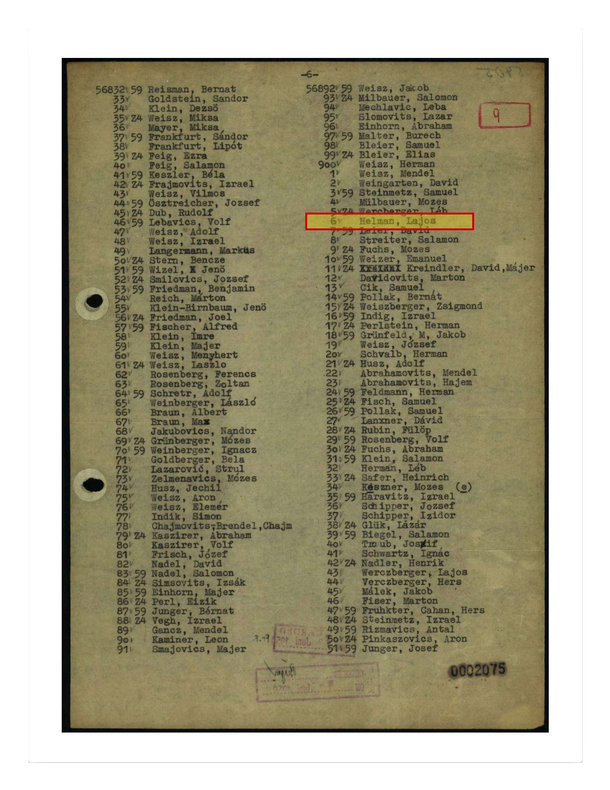

The Case
I always thought he was alone.
He wasn’t. Two lines below him on the transport roster was his nephew Michal. Two pages earlier was his nephew Lajos. They were arrested in the same village, carried in the same trade, sent to the same block, and photographed one behind the other on the same morning.
One card, and nothing else
The family held a single Buchenwald prisoner card for Zacharias Helman, Helen’s father, and assumed that was the end of what could be known. The research began in 2026.
Arolsen Archives · Buchenwald Häftlings-Personal-Karte 57101
Two Helmans, two lines apart
The card carried a prisoner number, and prisoner numbers sit inside sequences. Pulling the intake roster for that transport put Zacharias on page 8, at 57101. Two lines below him, at 57103, was a second Helman. Nobody in the family had ever heard of Michal.
Both are coded Z4, the block designation, in the same hand on the same page. Between them at 57102 sits Grünfeld, Herman, a stranger.
Arolsen Archives · nominal roll of the 1,000 Hungarian-Jewish arrivals of 2 June 1944, page 8, scan 0002077

Then a third, on an earlier page
Reading backwards through the same roll produced Helman, Lajos at 56906, two pages earlier. A lower number means an earlier arrival, and his own card confirms it. He was arrested on 10 April 1944, five weeks before the other two.
Three men of one surname on one transport, from a village of sixty-eight Jewish households.
Arolsen Archives · same roll, page 6, scan 0002075; prisoner card 56906

Who they were to each other
The registration forms name the parents. Lajos and Michal are both sons of Miksa Helman, and the 1921 Czechoslovak census places Miksa in the household of Iczik Helman, Zacharias’s father. Two brothers and their uncle. All three born in Tiszabogdány, all three arrested there, all three recorded as Fuhrmann, carters, the same trade.
At intake on 2 June they were photographed one behind the other, boards 322, 323 and 324, because the roll was alphabetical and their names fell together.
Buchenwald registration forms 56906, 57101, 57103 · 1921 Czechoslovak census, Bohdan · alphabetical roll, entries 322 to 324
Following them forward, and finding they lived
The two nephews were sent to the synthetic-fuel plant at Rehmsdorf, the Kommando code-named Wille. When it was evacuated in April 1945 the train was strafed from the air and the survivors were marched the rest of the way. Both reached Terezín. Both were liberated there.
Zacharias went the other way. Transferred to Magdeburg-Rothensee on 23 July 1944, worked past use, ordered back to Auschwitz that October, and killed there about the 10th.
Terezín Memorial prisoner cards · Rehmsdorf personnel cards · prisoner card 57101, Magdeburg transfer and October return
They were the boys from Helen’s story
In her recorded testimony Helen says that after the war, in Budapest, she found two people from her village, and that one of them was a cousin. They told her what had happened to her mother, her father and her brothers and sisters. She never gave their names.
Their own Budapest registration forms, filled out in their own hands, place them in the city in June 1945. Lajos registered on 8 June. Michal wrote his own name on his, Helmán Mihály.
The records named the two people she had described and could not name.
Helen Landó Helman, recorded testimony · Budapest survivor registration forms (Törzslap), 1945
Pages of Testimony, and a family that had been filing them
Searching the nephews’ parents at Yad Vashem returned Pages of Testimony for Miksa Helman and his wife Adél née Petranker, and for two of their sons. The submitters were their own surviving children, filing from Israel in the 1990s.
Which meant the family had not only survived. Some of them had been alive, and documenting their dead, for fifty years.
Yad Vashem Central Database, Pages of Testimony, items 225463, 225464, 225466, 1191850, 1191854
The family who did not know she had survived
Following the submitters forward led to living descendants, from a branch that had settled on a kibbutz before the war. They had built a family tree of their own and they knew their line perfectly well. What was missing from it were Zacharias and David, two of Iczik’s sons, and everyone who came after them. On that tree those branches simply stopped.
So the reconnection ran in the other direction from the one you would expect. The research did not hand her a lost family. It handed a family back two brothers, and told them that one of those brothers had a granddaughter who lived.
Conflicting evidence
Four conflicts sit inside this case. They are recorded here rather than resolved silently.
What was searched and not found
Negative results are part of the case. The Helman name does not appear in the Bohdan entry of the Czechoslovak business directory in any of its 1925, 1937 or 1938 editions, which is consistent with a poor carter’s family never being registered as a firm. Miksa Helman appears nowhere in the 1,000-name roll under any surname, birthplace or occupation, which is what establishes that he never reached Buchenwald and stayed at Auschwitz. No family passport photograph exists anywhere in the digitised DAZO collection, because the family never emigrated west in the 1920s and so never applied for one.
An identification is admitted only where independent record types corroborate one another without contradiction, and every linkage is verified against the primary document rather than an index entry. Where the evidence supports a probable conclusion rather than a proven one, it is stated as probable. Conflicts are disclosed, not reconciled by preference.
Repositories
Arolsen Archives · Yad Vashem Central Database of Shoah Victims’ Names · Terezín Memorial · USHMM · JewishGen Subcarpathia and Máramaros vital records · Sub-Carpathia Genealogy · the 1921 Czechoslovak census · Budapest survivor registration forms · Sefer Marmaros, Rakhiv and Bogdan chapters · the Kassa deportation log as published in Braham.